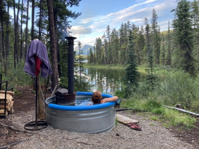

Jmenuji se Adéla, ale všichni mi říkají Áďo. Většinu svého volné času trávím v přírodě. Kdykoliv můžu, vyrazím na hory. Hory miluju, nemůžu se jich nabažit, jsou prostě úžasné.
Dříve jsem pracovala v kanceláři u počítače, ale nedávno jsem se rozhodla, že ze svého koníčka údělám zdroj obživy, a stala jsem se turistickým průvodcem. Splnila jsem si životní sen a organizuji zájezdy do hor po celém světě.
Při svých výletech ráda fotím. Díky fotkám si mohu kdykoliv připomenout všechny úžasná místa, kde jsem byla. Zde je malý výběr z posledního výletu na kanadský Yukon.
Pracuji jako turistický průvodce pro cestovní kancelář Áďulka. Organizujeme zájezdy do hor po celé zeměkouli. Většinu dobrodružství, které organizuji, také na místě sama provázím. Na horách jsem nejšťastnější a jen doma bych nevydržela.
Pokud si nevyberete z naší nabídky, mohu vám pomoci s organizací vaší vlastní výpravy i mimo cestovní kancelář.
| Služba | Cena |
|---|---|
| Plánování výpravy | 8000 Kč |
| Zajištění cestovního pojištění | 500 Kč/hod |
| Pomoc s nákupem vybyvení | 1700 Kč/hod |
| Průvodce v horách | 3000 Kč/den |
Ráda si povídám. O horách, hudbě, prostě o životě. Ráda zajdu na koncert nebo na cestovatelskou přednášku. Pokud máš podobné zájmy, klidně mi napiš na email nebo se mi ozvi naFacebooku. Stále hledám nové kamarády.
Adéla Maříková
Pouliční 123
Městečko nad Řekou
123 45
IČ: 12345678
E-mail: adela@email.cz
Mobil: +420 987 654 321